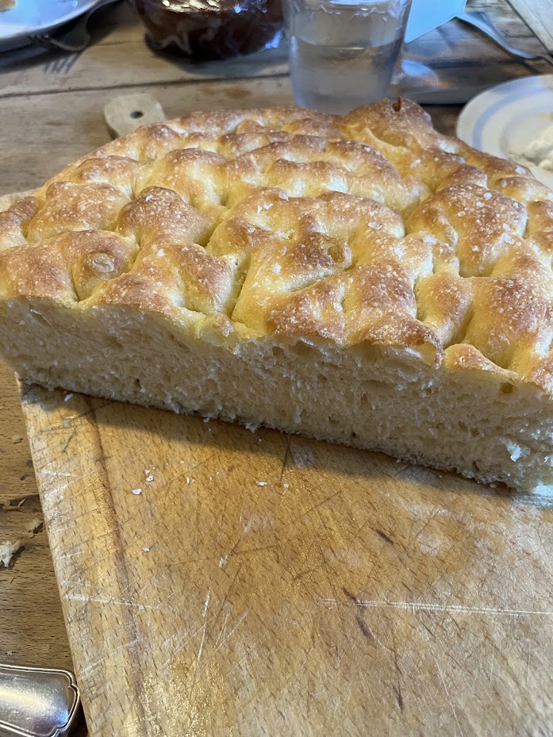
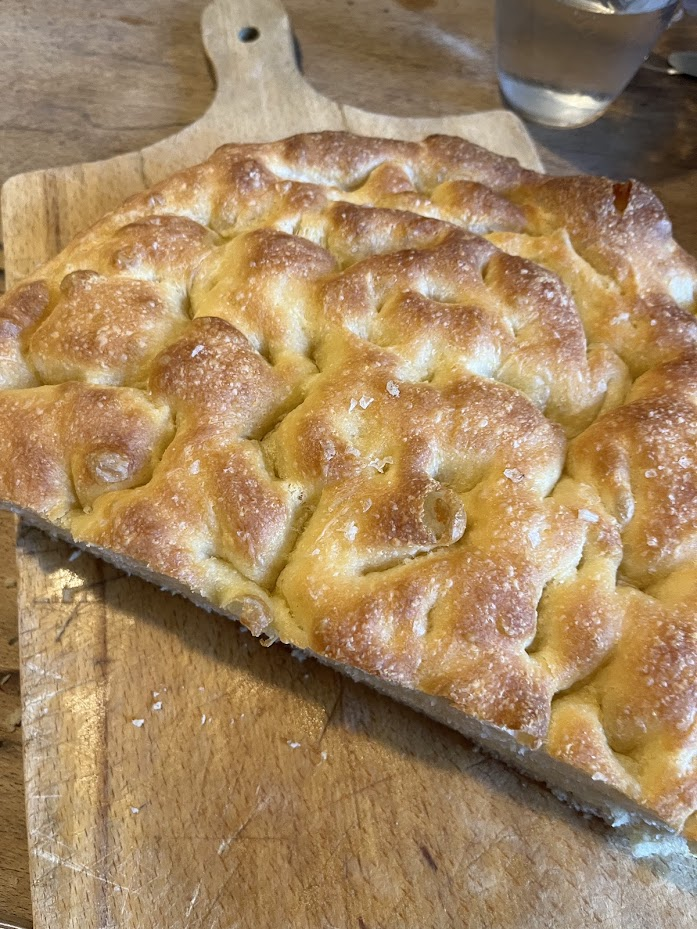

Focaccia de Bartocetti & Zanoni
⏱️ 3h
🔥 Niveau : Moyen
👥 1 focaccia (24 cm)



Étapes
- Cuire la pomme de terre avec la peau, l’écraser finement et laisser tiédir.
- Mélanger la levure avec le lait tiède (45°C).
- Pétrir : 5 min vitesse 1 puis 15 min vitesse 2.
- Laisser pousser 1h30 à 30°C.
- Graisser un cercle de 24 cm, ajouter un peu d’huile et de polenta.
- Verser la pâte, ajouter l’huile, faire les trous, garnir généreusement.
- Laisser pousser 50 min.
- Cuire 22 min à 180°C avec vapeur.
- Décerclez, huilez légèrement, ajoutez du thym frais.